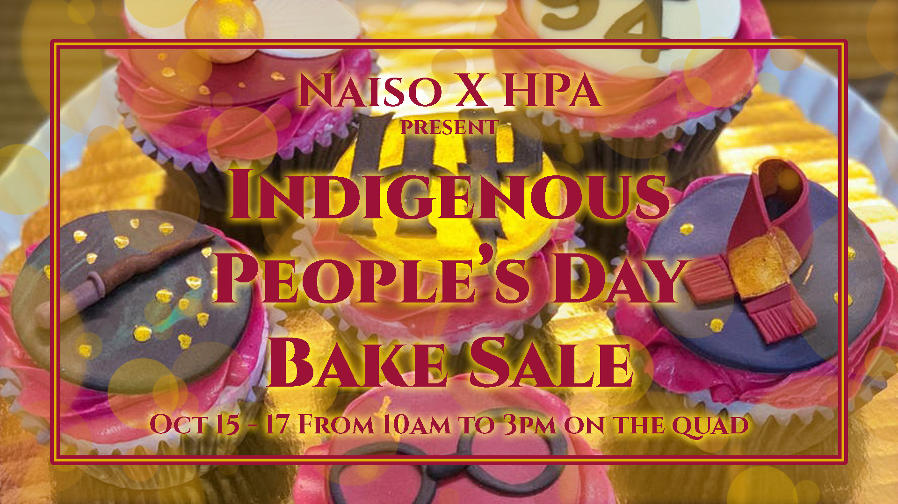
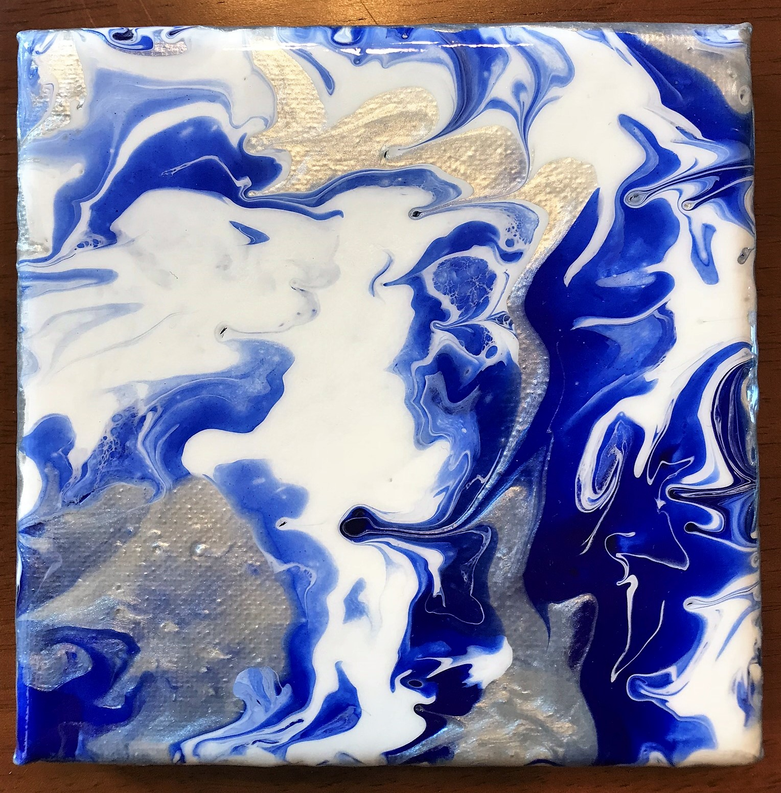
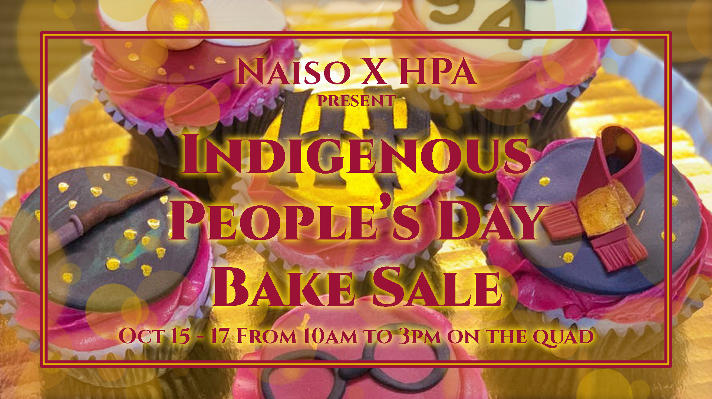
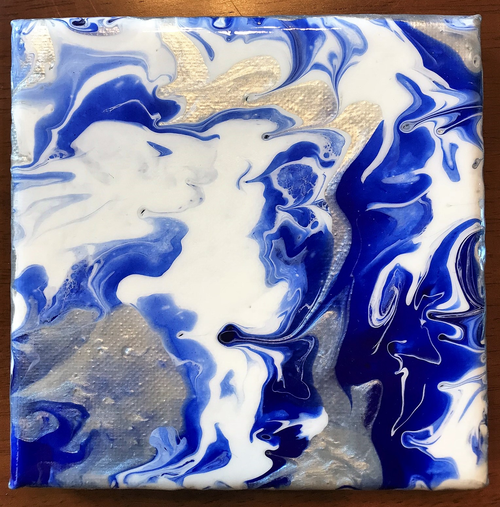
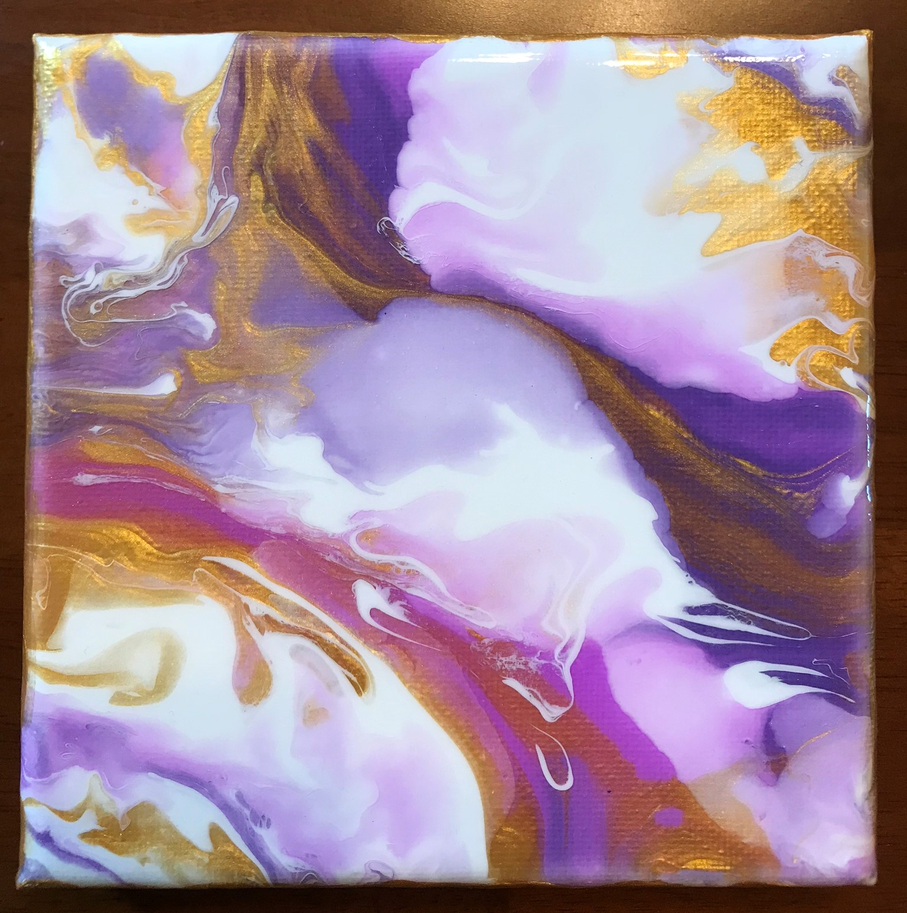
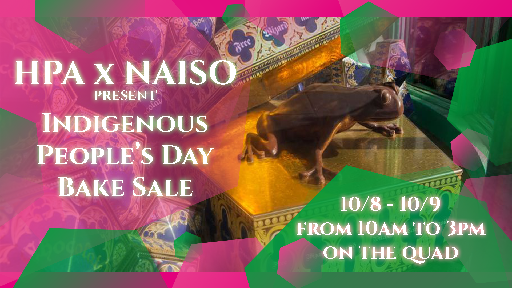
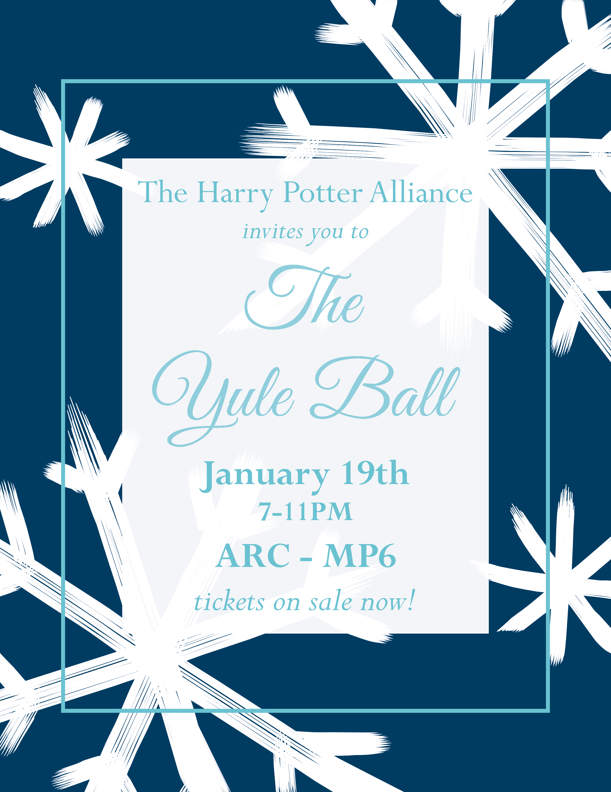
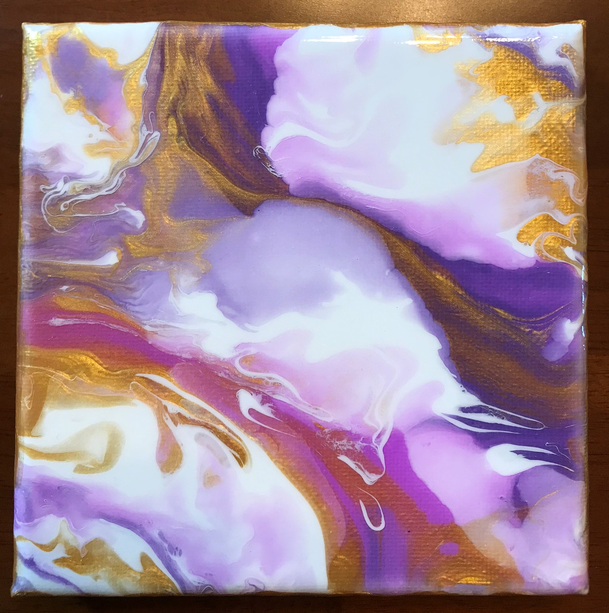
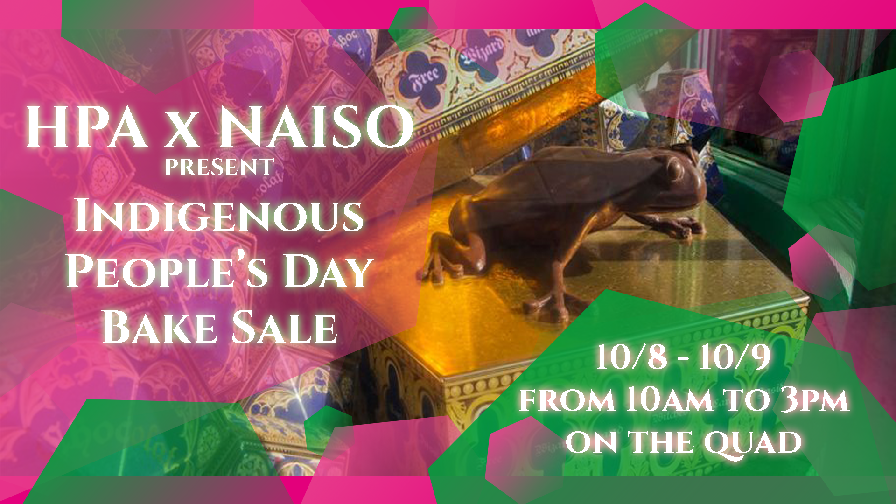
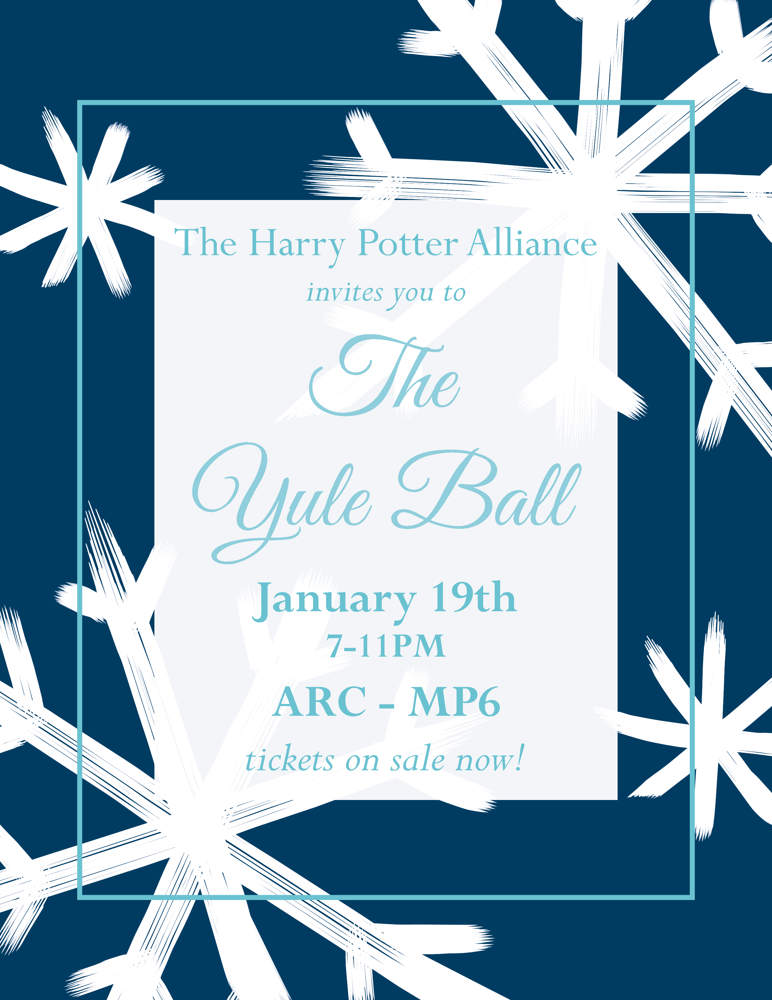

Education
My major and minor combination at the University of Illinois has allowed me to explore creative fields such as web development and UI/UX design. It has become a passion of mine to learn how to make graphics and interfaces with accessibility in mind, especially as technology is connecting more and more people.
As such, I've taken the liberty to take courses at my university and enroll in online supplementary courses that are related to my major and concentration. I hope to be able to put my creativity and skills to use at a company with the same end goal as me: an accessible product.
Major: Bachelor of Science in Computer Science & Anthropology (Graduation Date: Dec 2021)
Minor: Art + Design
ATLAS (Applied Technologies for Learning in the Arts & Sciences)
By interning with the ATLAS Program, I could apply skills I learned in my courses to projects provided by faculty members at the university. Web accessibility, client relations, and team leadership were among some of the skills I had the opportunity to pick up as an intern. Two of my favorite projects I worked on as a Team Lead Web Developer were the Illinois Maya Initiative and the Denmark Group websites.
Team Lead - Web Developer (August 2020 - December 2021)
- Manage a new 5-person subgroup of ATLAS to aid in the redesigns of outdated Research Faculty websites, as well as create custom websites for University-affiliated groups using WordPress
- Established web development skill 4-week courses and weekly technical seminars
- Assist ATLAS program leaders by advising project timeframes, supporting new interns, and finalizing unfinished, web-related projects
Web/Marketing Designer (June 2020 - August 2020)
- Remodeled the layout and appearance of the e-text for Engaging Youth for Positive Change (EYPC) with accessibility and usability in mind
- Presented bi-weekly updates to a 6-person team and incorporated their feedback and vision
- Improved the site navigation by restructuring menus and pages for the EYPC WordPress website, as well as produced its modern icons
Website Content/Migration Specialist (January 2020 - May 2020)
- Designed webpages on University of Illinois Center for East Asian and Pacific Studies based on changing client requirements and deadlines
- Used in-house tools to migrate data over to newer website formats
- Learned a new website content management framework called Drupal, utilizing the given tools to produce more creative design layouts
- Engaged in digital accessibility training and updated website content to fit those requirements
- Completed a detailed website maintenance guide for clients after the new website was launched
Harry Potter Alliance
The Harry Potter Alliance Club at the University of Illinois is just one chapter of a larger organization committed to raising money for and awareness of global, national, and local issues by using fan activism.
Art Director - Executive Board Position (May 2018 - May 2021)
- Design digital artwork and graphics for advertisement of club activities
- Coordinate with other organizations and University administration to manage events
- Consult with club members to create artistic products such as flyers and Facebook banners
- Prioritize goals and resolve conflicts during large fund-raising events
- Direct volunteers to help with the decoration of ballrooms and green-spaces for carnivals
%20(1).png)

.png) 



.jpg)
.png)
.png)

.png) 




